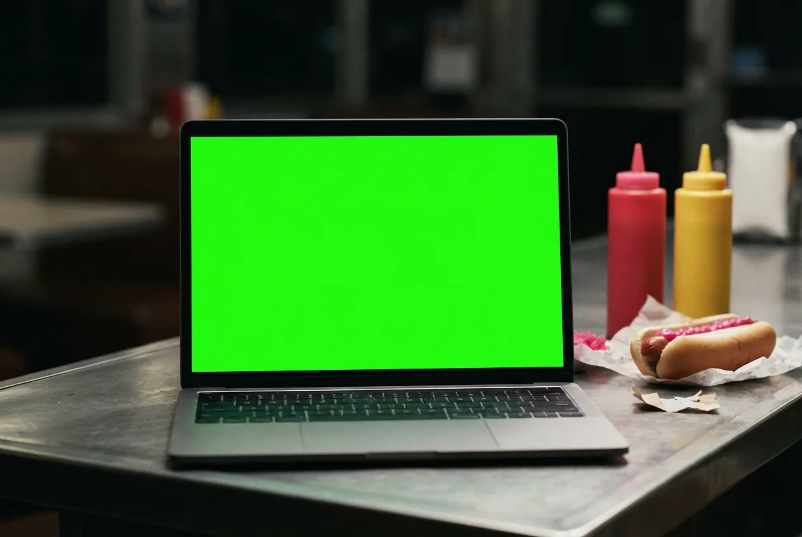
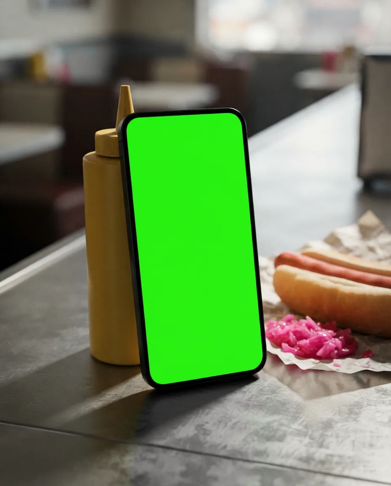
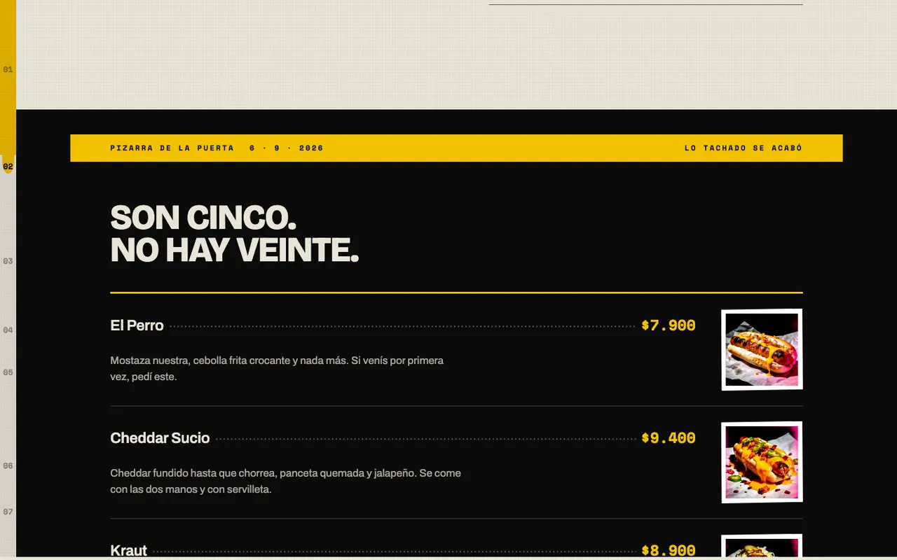
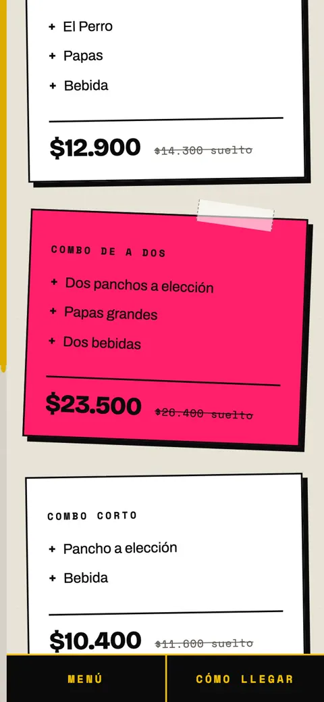
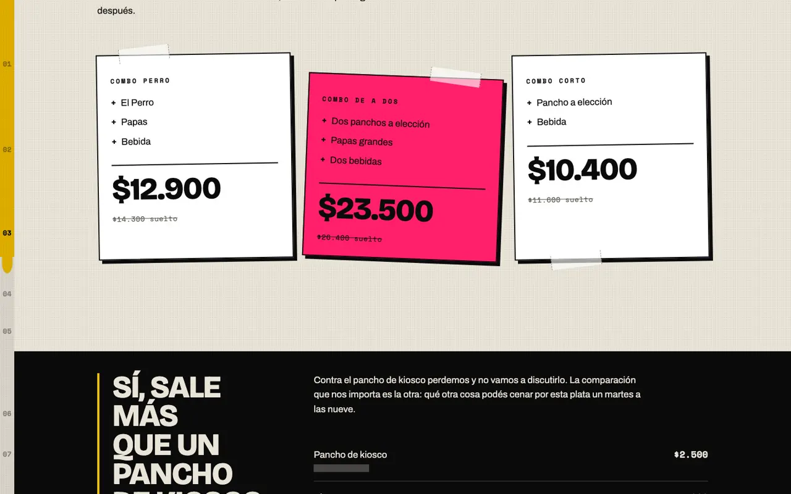
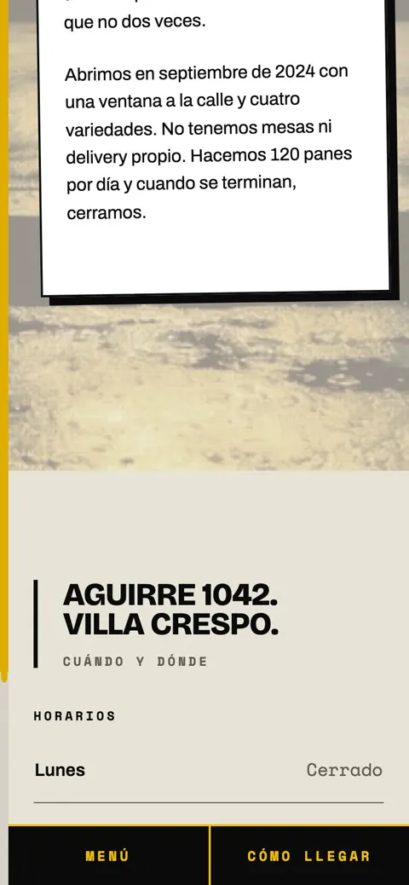
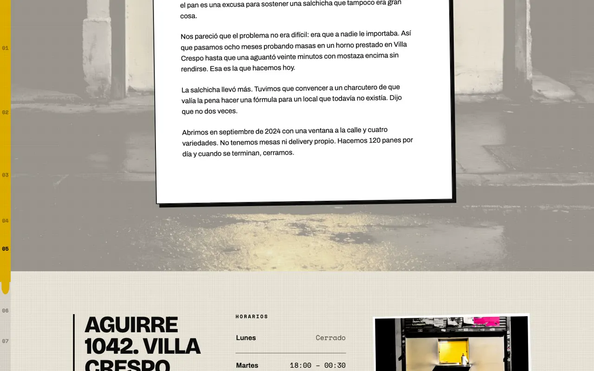

- Concepto · no encargado
- Gastronomía
- 2026
Perro.
Panchería con voz de fanzine punk. Dos cosas importan: el pan y la salchicha.
Ver el sitio

Lo que vi
Una panchería con dos cosas propias, el pan y la salchicha, que cobra más que un pancho de kiosco y menos que cualquier otra cena. La trampa del rubro es el diner americano de los 50: cromo, vichy y neón.
La idea
«Sí, sale más que un pancho de kiosco.»
La objeción número uno es qué tiene de especial, así que el pan y la salchicha se explican antes de cualquier precio. La voz es de fanzine punk, la página es un collage impreso, y un chorro de mostaza marca el avance y sirve de navegación.
Por dentro





Cómo usé IA
| Herramienta | Para qué | Lo que corregí a mano |
|---|---|---|
| APImart | Ocho generaciones para el collage, US$0,21 en total, y 19 recortes. | El logo es tipográfico: uno generado habría sido peor. |
| Claude Code | La página densa como tapa de fanzine, con el chorro de mostaza como progreso. | El rótulo arriba de cada título era un molde: lo rehice con cuatro formas y ninguna en más de 3 de las 7 secciones. |
| Datos | Dirección, horarios y precios de ejemplo, anclados a precios reales del rubro. | Está declarado en una franja arriba de la página. |
En números
- Dólares en imágenes
- 0,21
- Recortes del collage
- 19
- Formas de sección
- 4
- Criterios de QA aprobados
- 11/11
Verificado en 375, 390 y 768 px: cuatro errores encontrados y corregidos.